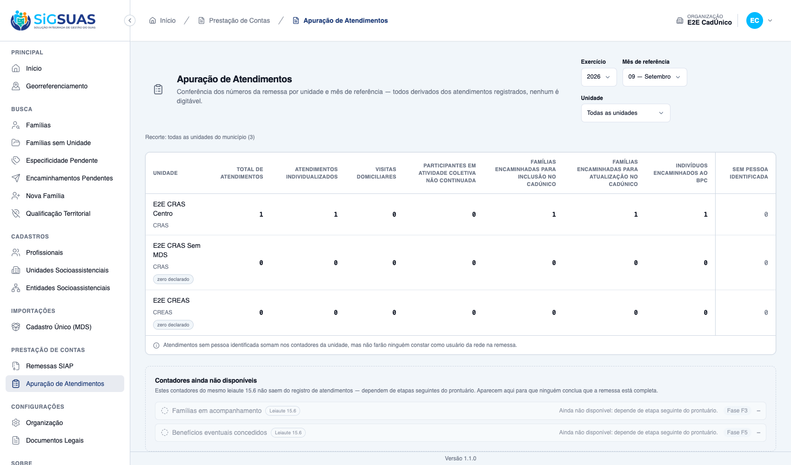

Os 10 critérios de aceite do chamado, mais 3 derivados na spec. A HU é pequena de código e grande de teste, por um motivo específico: trocar a contagem de distintos por contagem de linhas não quebraria nenhum teste nem nenhuma tela — apenas inflaria o número declarado ao Tribunal de Contas. Por isso a evidência central é a massa desenhada para falhar com a contagem errada, verificada por sete mutações independentes, todas mortas. Na tela, duas inclusões da mesma família no mesmo mês exibem 1, não 2.
| CA | Critério | Status |
|---|---|---|
| CA01 | Os três contadores aparecem na apuração | ATENDIDO · navegador |
| CA01b | Unidade sem encaminhamento aparece com zero declarado (derivado do CA01) | ATENDIDO · navegador |
| CA02 | A contagem é de FAMÍLIAS DISTINTAS, não de encaminhamentos | ATENDIDO · navegador |
| CA03 | O contador do BPC conta PESSOAS distintas | ATENDIDO · automatizado |
| CA04 | O tipo de atendimento de cadastramento NÃO alimenta os contadores | ATENDIDO · automatizado |
| CA05 | Encaminhamento cancelado não conta | ATENDIDO · automatizado |
| CA06 | O desfecho não interfere na contagem | ATENDIDO · automatizado |
| CA07 | A contagem é pelo mês do encaminhamento | ATENDIDO · automatizado |
| CA07b | Código inativado continua contando o passado (derivado do CA07) | ATENDIDO · automatizado |
| CA08 | O painel de contadores indisponíveis encolhe | ATENDIDO · navegador |
| CA09 | Recorte por unidade | ATENDIDO · automatizado |
| CA09b | Nenhuma permissão nem tela nova (derivado do CA09) | ATENDIDO · automatizado |
| CA10 | Isolamento entre organizações | ATENDIDO · automatizado |
Critério (Gherkin): Dado que há encaminhamentos registrados no mês Quando eu consultar a apuração Então vejo os contadores de inclusão no CadÚnico, atualização cadastral e BPC
Como foi testado: Login como Master → Prestação de Contas → Apuração de Atendimentos → exercício 2026, mês 09.

Critério (Gherkin): Dado que a unidade não teve encaminhamentos no mês Quando eu consultar a apuração Então ela aparece com zero, explicitamente declarado
Como foi testado: O esqueleto de unidades vem da HU #10711 e passa a cobrir também os contadores novos.
Critério (Gherkin): Dado que a mesma família recebeu dois encaminhamentos de inclusão no mesmo mês Quando eu consultar a apuração Então a família é contada uma única vez
Como foi testado: Massa montada de propósito para falhar com a contagem errada: dois encaminhamentos de inclusão no CadÚnico para a mesma família, no mesmo mês e na mesma unidade.
Critério (Gherkin): Dado que a mesma pessoa recebeu dois encaminhamentos ao BPC Quando eu consultar a apuração Então ela é contada uma única vez
Como foi testado: O BPC é o único contador que conta indivíduos — os de CadÚnico contam famílias.
Evidência por cobertura automatizada — ver Anexo.
Critério (Gherkin): Dado que há atendimentos do tipo cadastramento no mesmo mês Quando eu consultar a apuração Então eles não somam nos contadores de CadÚnico
Como foi testado: Este critério fecha um risco registrado na fase F1: derivar os contadores de CadÚnico da contagem do tipo de atendimento 4 faria o mesmo fato ser declarado duas vezes.
Evidência por cobertura automatizada — ver Anexo.
Critério (Gherkin): Dado um encaminhamento cancelado Quando eu consultar a apuração Então ele não é contado
Como foi testado: O cancelamento é registrado por situação, não por exclusão — o registro permanece no prontuário mas sai da contagem.
Evidência por cobertura automatizada — ver Anexo.
Critério (Gherkin): Dado um encaminhamento sem desfecho registrado Quando eu consultar a apuração Então ele conta igual a um encaminhamento já concluído
Como foi testado: Este critério também fecha o CA06 da HU #10714, que foi deferido para esta etapa por depender da apuração.
Evidência por cobertura automatizada — ver Anexo.
Critério (Gherkin): Dado um encaminhamento registrado em mês diferente do de criação Quando eu consultar a apuração Então ele conta no mês do encaminhamento
Como foi testado: Conta pela data do encaminhamento, não pela data de criação do registro nem pela do desfecho.
Evidência por cobertura automatizada — ver Anexo.
Critério (Gherkin): Dado que um código de encaminhamento foi inativado Quando eu consultar a apuração de mês anterior Então os encaminhamentos daquele código continuam contando
Como foi testado: Inativar um item do catálogo não pode apagar meses já prestados.
Evidência por cobertura automatizada — ver Anexo.
Critério (Gherkin): Dado que os contadores de encaminhamento passaram a ser apurados Quando eu consultar a apuração Então eles saem da lista de indisponíveis
Como foi testado: O painel é dinâmico: renderiza o que o backend declarar como indisponível.
Critério (Gherkin): Dado que seleciono uma unidade específica Quando eu consultar a apuração Então vejo apenas os números daquela unidade
Como foi testado: O recorte por unidade da HU #10711 passa a valer também para os contadores novos.
Evidência por cobertura automatizada — ver Anexo.
Critério (Gherkin): Dado que os contadores foram acesos Quando eu verificar a superfície da aplicação Então nada de novo foi exposto
Como foi testado: Restrição explícita da especificação: mesma rota, mesmo controle de acesso, mesma tela.
Evidência por cobertura automatizada — ver Anexo.
Critério (Gherkin): Dado que outra organização tem encaminhamentos no mesmo mês Quando eu consultar a apuração da minha organização Então os números dela não aparecem
Como foi testado: Cobertura acrescentada após a revisão: era a única superfície da fase em que uma fonte de dados nova entrou num endpoint existente sem teste de isolamento.
Evidência por cobertura automatizada — ver Anexo.
PASS Tests\Feature\Api\Client\AttendanceReportReferralCrossTest ✓ it never feeds the CadUnico counters from attendance type 4 — 9 att… 1.39s PASS Tests\Feature\Api\Client\AttendanceReportTest ✓ it derives the four counters per unit and the total includes types… 0.12s ✓ it declares exactly the two remaining unavailable counters — the F2… 0.09s ✓ it excludes cancelled attendances from the report while they remain… 0.14s ✓ it counts a retroactive attendance in the month it happened, not th… 0.08s ✓ it reflects a type correction on the next query and stores nothing… 0.11s ✓ it reports attendances without an identified person separately, via… 0.09s ✓ it scopes the Operacional to units with an assignment in force TODA… 0.09s ✓ it shows the master every unit of the tenant, and a unit without mo… 0.09s ✓ it never leaks citizen data in the serialized payload — no name, no… 0.08s ✓ it keeps counting past attendances of a type inactivated in the Glo… 0.08s ✓ it narrows the report to a single unit when social_unit_uuid is giv… 0.09s ✓ it keeps unit_count at the Operacional full scope when filtering on… 0.15s ✓ it rejects with a named 422 a unit outside the user scope — never a… 0.09s ✓ it rejects an out-of-range reference month with the SIAP named mess… 0.09s ✓ it denies the Operacional without the manual grant — the restricted… 0.07s ✓ it denies a granted user without an ACTIVE professional bond in the… 0.08s ✓ it lights the three referral counters with distinct families and pe… 0.09s ✓ it counts the same family ONCE with two inclusion referrals in the… 0.08s ✓ it counts two distinct people of the SAME family in the BPC counter… 0.08s ✓ it counts the family once in EACH counter — distinct per counter, n… 0.07s ✓ it drops a cancelled referral from the counters while it stays visi… 0.11s ✓ it keeps counting a referral whose outcome became not_attended — th… 0.08s ✓ it counts a retroactive referral in the month it was made, not the… 0.08s ✓ it keeps counting past referrals of a code inactivated in the Globa… 0.07s ✓ it keeps counting past referrals of a code SOFT-DELETED in the Glob… 0.07s ✓ it declares zero on the three referral counters for a unit without… 0.08s ✓ it never feeds the BPC counter from a referral row without a person… 0.07s PASS Tests\Feature\TenantIsolation\AttendanceReportIsolationTest ✓ it shows the tenant A master only tenant A units and numbers (CA12/… 0.07s ✓ it rejects a tenant B unit used as filter with the same named 422 —… 0.07s ✓ it never counts tenant B referrals in the tenant A referral counter… 0.07s Tests: 31 passed (143 assertions) Duration: 5.25s